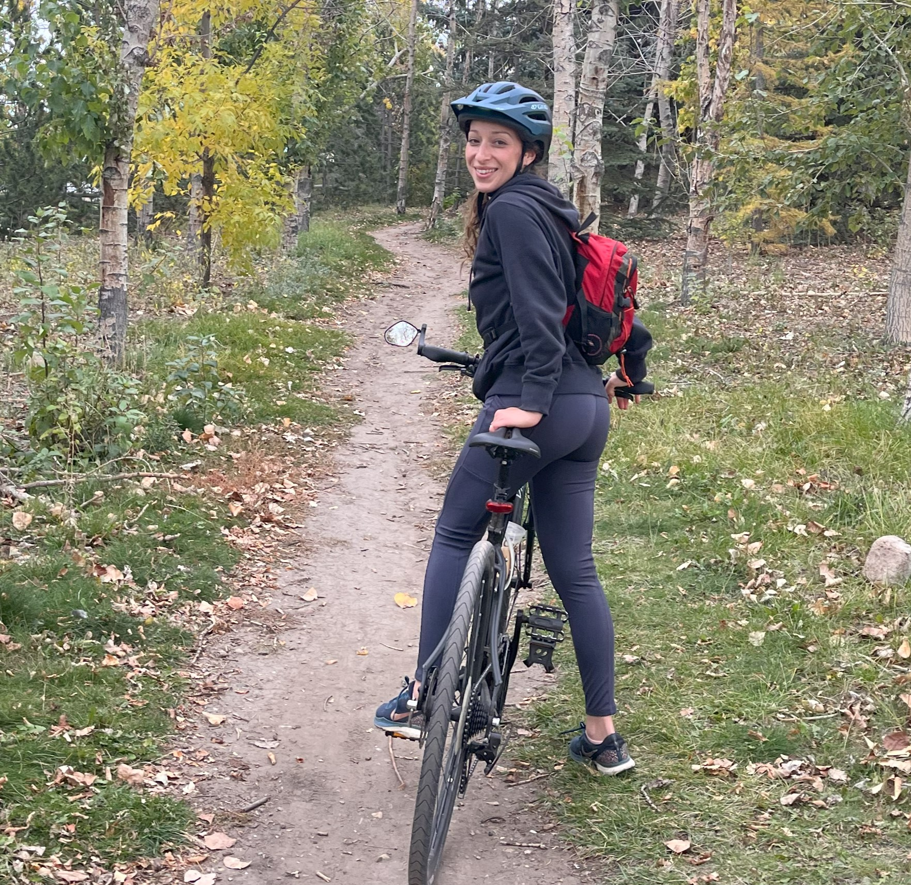

In 2017, I completed a two-year IT Diploma program from Southern Alberta Institute of Technology where I learned how to code, splice fiber, configure networks, and troubleshoot software and hardware. For the next six years, I worked as an IT technician all over Canada for multiple Internet Service Providers.
In 2023, I decided to make a career change and attended Bow Valley College where I earned a Professional Bookkeeping Certificate. Since then, I've worked for large scale corporations starting off in Accounts Payable, moving up to Accounting Assistant, and, finally, working as Financial Accountant.
At the start of 2026, I started a solo bookkeeping business to focus on what I love most about accounting: creating financial transparency and accuracy for small businesses so that businesses can focus on what matters most: a healthy work/life balance with peace of mind.
The name comes from the Banded Peak summit in Kananaskis, Alberta. Although an avid hiker, I have yet to do the 35km Mount Glasgow to Banded Peak traverse, but once I do, I'll be updating this section immediately.
I'm fluent in English and French. I enjoy reading, hiking, mountain biking, traveling, and playing sports during my spare time.
I only accept clients whose products and services I believe in. I support ethical business practices, accountability, and open communication.
If you're looking for affordable, flexible, Canadian-owned bookkeeping services, email me at info@bandedpeakbookkeeping.com
Back to Top ↑